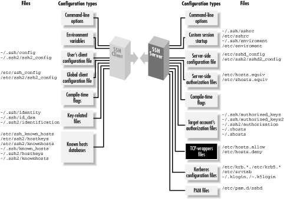
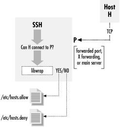

|  |
9.4. Forwarding Security: TCP-wrappers and libwrap
At several points in this chapter, we have talked about security issues and limitations of forwarding. So far, we've seen very little control over who can connect to a forwarded port. The SSH1 and OpenSSH default is to allow connections only from the local host, which is reasonably secure for a single-user machine. But if you need to allow connections from elsewhere, you have a problem, since it's all or nothing: to allow connections from elsewhere (using -g or GatewayPorts=yes), you must allow them from anywhere. And with SSH2 it's worse: forwarded ports will always accept connections from anywhere. X forwarding is in a slightly better position, since the X protocol has its own authentication, but you might still prefer to restrict access, preventing intruders from exploiting an unknown security flaw or performing a denial-of-service attack. SSH on the Unix platform provides an optional feature for access control based on the client address, called TCP-wrappers. The term TCP-wrappers refers to software written by Wietse Venema. If it isn't already installed in your Unix distribution, you can get it at:ftp://ftp.porcupine.org/pub/security/index.htmlTCP-wrappers are a global access control mechanism that integrates with other TCP-based servers, such as sshd or telnetd. Access control is based on the source address of incoming TCP connections. That is, a TCP-wrapper permits or denies connections based on their origin, as specified in the configuration files /etc/hosts.allow and /etc/hosts.deny. Figure 9-12 shows where TCP-wrappers fit into the scheme of SSH configuration.

Figure 9-12. TCP-wrappers and SSH configuration (highlighted parts)
There are two ways to use TCP-wrappers. The most common method, wrapping, is applied to TCP servers that are normally invoked by inetd. You "wrap" the server by editing /etc/inetd.conf and modifying the server's configuration line. Instead of invoking the server directly, you invoke the TCP-wrapper daemon, tcpd, which in turn invokes the original server. Then, you edit the TCP-wrapper configuration files to specify your desired access control. tcpd makes authorization decisions based on the their contents. The inetd technique applies access control without having to modify the TCP server program. This is nice. However, sshd is usually not invoked by inetd [Section 5.4.3.2, "Invocation by inetd"], so the second method, source code modification, must be applied. To participate in TCP-wrapper control, the SSH server must be compiled with the flag -- with-libwrap to enable internal support for TCP-wrappers. [Section 4.1.5.3, "TCP/IP support"] sshd then invokes TCP-wrapper library functions to do explicit access-control checks according to the rules in /etc/hosts.allow and /etc/hosts.deny. So in a sense, the term "wrapper" is misleading since sshd is modified, not wrapped, to support TCP-wrappers. Figure 9-13 illustrates the process.
Figure 9-13. TCP-wrapper (libwrap) operation
9.4.1. TCP-wrappers Configuration
The access control language for TCP-wrappers has quite a few options and may vary depending on whose package you use and what version it is. We won't cover the language completely in this book. Consult your local documentation for a complete understanding: the manpages on tcpd (8), hosts_access (5), and hosts_options (5). We will just indicate some simple, common configurations. The TCP-wrapper configuration is kept in the files /etc/hosts.allow and /etc/hosts.deny. These files contain patterns of the form:Each pattern matches some (server,client) pairs, and hence may match a particular client/server TCP connection. Specifically, a connection between client C and server S matches this rule if some service service_i matches S, and some client_j matches C. (We explain the format and matching rules for these subpatterns shortly.) The hosts.allow file is searched first, followed by hosts.deny. If a matching pattern is found in hosts.allow, the connection is allowed. If none is found there, but one matches in hosts.deny, the connection is dropped. Finally, if no patterns match in either file, the connection is allowed. Nonexistence of either file is treated as if the file existed and contained no matching patterns. Note that the default, then, is to allow everything. There is also an extended syntax, documented on the hosts_options (5) manpage. It may or may not be available, depending on how your TCP-wrapper library was built. It has many more options, but in particular, it allows tagging an individual rule as denying or rejecting a matching connection; for example:service_1 [service_2 service_3 ...] : client_1 [client_2 client_3 ...]
Using this syntax, you can put all your rules into the hosts.allow file, rather than having to use both files. To reject anything not explicitly allowed, just put ALL: ALL:DENY at the end of the file. In a pattern, each service is a name indicating a server to which this pattern applies. SSH recognizes the following service names:sshd1 : bad.host.com : DENY
- sshd
- The main SSH server. This can be sshd, sshd1, sshd2, or whatever name you invoke the daemon under (its argv[0] value).
- sshdfwd-x11
- The X forwarding port.
- sshdfwd-N
- Forwarded TCP port N (e.g., forwarded port 2001 is service sshdfwd-2001).
TIP: The X and port forwarding control features are available only in SSH1 and SSH2; OpenSSH uses only libwrap to control access to the main server.Each client is a pattern that matches a connecting client. It can be:
- An IP address in dotted-quad notation (e.g., 192.168.10.1).
- A hostname (DNS, or whatever naming services the host is using).
- An IP network as network-number/mask (e.g., 192.168.10.0/255.255.255; note that the "/n-mask-bits" syntax, 192.168.10.0/24, isn't recognized).
- "ALL", matching any client source address.
Example 9-1. Sample /etc/hosts.allow File
# # /etc/hosts.allow # # network access control for programs invoked by tcpd (see inetd.conf) or # using libwrap. See the manpages hosts_access(5) and hosts_options(5). # allow all connections from my network or localhost (loopback address) # ALL : 192.168.10.0/255.255.255.0 localhost # allow connections to these services from anywhere # ipop3d imapd sshd1 : ALL # allow SSH-2 connections from the class C networks # 192.168.20.0, 192.168.21.0, ..., 192.168.27.0 # sshd2 : 192.168.20.0/255.255.248.0 # allow connections to forwarded port 1234 from host blynken sshdfwd-1234 : blynken.sleepy.net # restrict X forwarding access to localhost sshdfwd-x11 : localhost # deny everything else # ALL : ALL : DENY
[127]SSH2 2.1.0 has a bug that causes an SSH session to freeze after it rejects a forwarded connection because of a TCP-wrappers rule, at least on some Unix systems. Until this bug is fixed, don't use TCP-wrappers for protecting forwarded ports (although using it to restrict access to the main sshd2 server appears to work).The final line denies any connection that doesn't match the earlier lines, making this a default-to-closed configuration. If you wanted instead to deny some particular connections but allow all others, you would use something like this:
The final line is technically not required, but it's a good idea to make your intentions explicit. If you don't have the host_options syntax available, you instead have an empty hosts.allow file and the following lines in hosts.deny :ALL : evil.mordor.net : DENY telnetd : completely.horked.edu : DENY ALL : ALL : ALLOW
ALL : evil.mordor.net telnetd : completely.horked.edu
9.4.2. Notes About TCP-wrappers
Here are a few things to remember when using TCP-wrappers:- You can't distinguish between ports forwarded by SSH1 and SSH2: the sshdfwd-* rules refer to both simultaneously. You can work around this limitation by linking each against a different libwrap.a, compiled with different filenames for the allow and deny files, or by patching the ssh and sshd executables directly, but then you have to keep track of these changes and extra files.
- The big drawback to TCP-wrappers is that it affects all users simultaneously. An individual user can't specify custom access rules for himself; there's just the single set of global configuration files for the machine. This limits its usefulness on multiuser machines.
- If you compile SSH with the -- with-libwrap option, it is automatically and always turned on; there's no configuration or command-line option to disable the TCP-wrappers check. Remember that SSH does this check not only for forwarded ports and X connections but for connections to the main SSH server. As soon as you install a version of sshd with TCP-wrappers, you must ensure that the TCP-wrappers configuration allows connections to the server, for instance with the rule sshd1 sshd2 sshd : ALL in /etc/hosts.allow.
- Using hostnames instead of addresses in the TCP-wrappers rule set involves the usual security tradeoff. Names are more convenient, and their use avoids breakage in the future if a host address changes. On the other hand, an attacker can potentially subvert the naming service and circumvent the access control. If the host machine is configured to use only its /etc/hosts file for name lookup, this may be acceptable even in a highly secure environment.
- The TCP-wrappers package includes a program called tcpdchk. This program examines the wrapper control files and reports inconsistencies that might signal problems. Many sites run this periodically as a safety check. Unfortunately, tcpdchk is written only with explicit wrapping via inetd.conf in mind. It doesn't have any way of knowing about programs that refer to the control files via the libwrap routines, as does sshd. When tcpdchk reads control files with SSH rules, it finds uses of the service names sshd1, sshdfwd-n, etc., but no corresponding wrapped services in inetd.conf, and it generates a warning. Unfortunately, we know of no workaround.
|  | |
| 9.3. X Forwarding |  | 9.5. Summary |